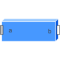

BodyBoxRigid body with box shape. Mass and animation properties are computed from box data and density (12 potential states) |

|
Diagram
{kind=link}
Information
This information is part of the Modelica Standard Library maintained by the Modelica Association.
Rigid body with box shape. The mass properties of the body (mass, center of mass, inertia tensor) are computed from the box data. Optionally, the box may be hollow. The (outer) box shape is by default used in the animation. The hollow part is not shown in the animation. The two connector frames frame_a and frame_b are always parallel to each other. Example of component animation (note, that the animation may be switched off via parameter animation = false):
A BodyBox component has potential states. For details of these states and of the "Advanced" menu parameters, see model MultiBody.Parts.Body.
Parameters (25)
| animation |
Value: true Type: Boolean Description: = true, if animation shall be enabled (show box between frame_a and frame_b) |
|---|---|
| r |
Value: Type: Position[3] (m) Description: Vector from frame_a to frame_b resolved in frame_a |
| r_shape |
Value: {0, 0, 0} Type: Position[3] (m) Description: Vector from frame_a to box origin, resolved in frame_a |
| lengthDirection |
Value: to_unit1(r - r_shape) Type: Axis Description: Vector in length direction of box, resolved in frame_a |
| widthDirection |
Value: {0, 1, 0} Type: Axis Description: Vector in width direction of box, resolved in frame_a |
| length |
Value: Modelica.Math.Vectors.length(r - r_shape) Type: Length (m) Description: Length of box |
| width |
Value: length / world.defaultWidthFraction Type: Distance (m) Description: Width of box |
| height |
Value: width Type: Distance (m) Description: Height of box |
| innerWidth |
Value: 0 Type: Distance (m) Description: Width of inner box surface (0 <= innerWidth <= width) |
| innerHeight |
Value: innerWidth Type: Distance (m) Description: Height of inner box surface (0 <= innerHeight <= height) |
| density |
Value: 7700 Type: Density (kg/m³) Description: Density of cylinder (e.g., steel: 7700 .. 7900, wood : 400 .. 800) |
| angles_fixed |
Value: false Type: Boolean Description: = true, if angles_start are used as initial values, else as guess values |
| angles_start |
Value: {0, 0, 0} Type: Angle[3] (rad) Description: Initial values of angles to rotate frame_a around 'sequence_start' axes into frame_b |
| sequence_start |
Value: {1, 2, 3} Type: RotationSequence Description: Sequence of rotations to rotate frame_a into frame_b at initial time |
| w_0_fixed |
Value: false Type: Boolean Description: = true, if w_0_start are used as initial values, else as guess values |
| w_0_start |
Value: {0, 0, 0} Type: AngularVelocity[3] (rad/s) Description: Initial or guess values of angular velocity of frame_a resolved in world frame |
| z_0_fixed |
Value: false Type: Boolean Description: = true, if z_0_start are used as initial values, else as guess values |
| z_0_start |
Value: {0, 0, 0} Type: AngularAcceleration[3] (rad/s²) Description: Initial values of angular acceleration z_0 = der(w_0) |
| sequence_angleStates |
Value: {1, 2, 3} Type: RotationSequence Description: Sequence of rotations to rotate world frame into frame_a around the 3 angles used as potential states |
| mo |
Value: density * length * width * height Type: Mass (kg) Description: Mass of box without hole |
| mi |
Value: density * length * innerWidth * innerHeight Type: Mass (kg) Description: Mass of hole of box |
| m |
Value: mo - mi Type: Mass (kg) Description: Mass of box |
| R |
Value: Frames.from_nxy(r, widthDirection) Type: Orientation Description: Orientation object from frame_a to coordinates system spanned by r and widthDirection |
| r_CM |
Value: r_shape + normalizeWithAssert(lengthDirection) * length / 2 Type: Position[3] (m) Description: Position vector from origin of frame_a to center of mass, resolved in frame_a |
| I |
Value: Frames.resolveDyade1(R, diagonal({mo * (width * width + height * height) - mi * (innerWidth * innerWidth + innerHeight * innerHeight), mo * (length * length + height * height) - mi * (length * length + innerHeight * innerHeight), mo * (length * length + width * width) - mi * (length * length + innerWidth * innerWidth)} / 12)) Type: Inertia[3,3] (kg·m²) Description: Inertia tensor of body box with respect to center of mass, parallel to frame_a |
Inputs (2)
| color |
Default Value: Modelica.Mechanics.MultiBody.Types.Defaults.BodyColor Type: Color Description: Color of box |
|---|---|
| specularCoefficient |
Default Value: world.defaultSpecularCoefficient Type: SpecularCoefficient Description: Reflection of ambient light (= 0: light is completely absorbed) |
Connectors (2)
Components (4)
| R |
Type: Orientation Description: Orientation object from frame_a to coordinates system spanned by r and widthDirection |
|
|---|---|---|
| body |
Type: Body |
|
| frameTranslation |
Type: FixedTranslation |
|
| world |
Type: World |
Used in Examples (6)
|
Modelica.Mechanics.MultiBody.Examples.Elementary Simple double pendulum with two revolute joints and two bodies |
|
|
Modelica.Mechanics.MultiBody.Examples.Elementary Demonstrate how to initialize a double pendulum so that its tip starts at a predefined position |
|
|
Modelica.Mechanics.MultiBody.Examples.Elementary Demonstrate line force with two point masses using a JointUPS and alternatively a LineForceWithTwoMasses component |
|
|
Modelica.Mechanics.MultiBody.Examples.Loops Model of one cylinder engine |
|
|
Modelica.Mechanics.MultiBody.Examples.Loops Planar four bars mechanism with one kinematic loop (with RevolutePlanarLoopConstraint joint) |
|
|
Modelica.Mechanics.MultiBody.Examples.Rotational3DEffects Demonstrates the usage of a BevelGear1D model and how to calculate the power of such an element |
Used in Components (2)
|
Modelica.Mechanics.MultiBody.Examples.Loops.Utilities Cylinder with rod and crank of a combustion engine |
|
|
Modelica.Mechanics.MultiBody.Examples.Loops.Utilities Model of one cylinder engine with gas force |